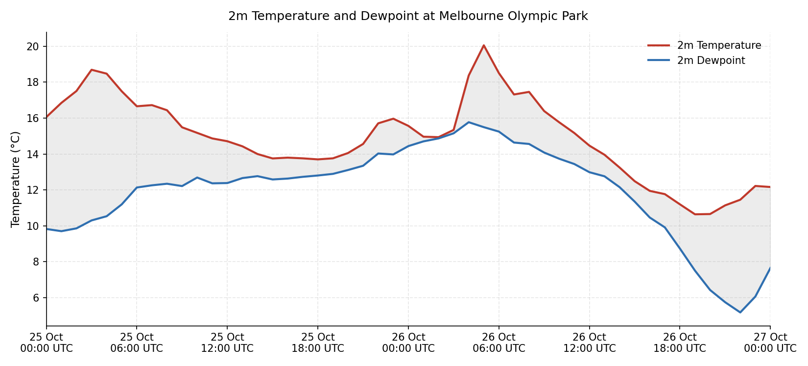

How good was our forecast?
The figure below shows the observed temperature and dew point temperature on the 25th and 26th of October at Melbrourne Olympic Park.

2m temperature and dewpoint at the ERA5 grid point nearest Melbourne, 00:00 UTC 25 Oct – 00:00 UTC 26 Oct 2025.
The atmospheric profile on the 26th of October is available from the University of Wyoming. It is also given in the table below.